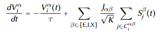

2021 Summer - Cambridge Research Program - Theoretical Neuroscience
Stimulating Neural Network in Brain with LIF(Leak Integrate-and-Fire) Model
PPT: stimulating_neural_network_in_brain_with_lif_model.pptx
Code: LIF.ipynb
This project was completed in the summer of 2021 when I was participating in the Theoretical Neuroscience research program at Cambridge University. The topic of this project is to investigate the asynchronous and irregular dynamical regime of cortical circuits in a simple model network implemented in python.
Architecture The network will be composed of three populations of N neurons each: one excitatory (‘E’) population, one inhibitory (‘I’) population, and a third, “external” population (‘X’) which will provide baseline input to the network.

Connectivity Every single neuron in the E- and I-populations receives input from K randomly chosen E-neurons, K randomly chosen I-neurons, and K randomly chosen X -neurons. We will use the notation Cαβi to denote the set that contains the indices of those K neurons in population β that have been randomly chosen to connect onto the ith neuron of population α. The weights associated with these connections (see also “dynamics” below) are given by Jαβ/√K; thus, all connections of the same “type” have the same weight. Note also that JαI < 0 (inhibitory connections), while JαE > 0 and JαX > 0 (excitatory connections) – whatever the identity α of the post-synaptic population.
Dynamics The neurons in the X-population are artificial “Poisson neurons”, i.e. they fire action potentials independently of each other, according to Poisson processes with rate rX. The neurons in the E- and I-populations are modeled as simple “leaky integrate-and-fire” (LIF) neurons, as follows. The membrane potential V αi of the ith neuron in population α obeys first-order dynamics given by:
where τ is the membrane time constant, and Sβj(t) is the spike train of the jth neuron in population β. Here, a spike train is modeled as a sum of Dirac delta functions placed at the times at which the neuron fires its action potentials. Note, therefore, that the outer sum (over β) says that “neurons in population α receive input from other neurons belonging to all 3 populations” (which includes α itself ), and the inner sum (over j) is gathering input from the K specific pre-synaptic partners found in each population.
Single LIF neuron Before we built the full network, we firstly stimulated the single LIF neuron situation.

The inputs are generated by np.random.binomial, so the inputs of the LIF neuron are irregular and asynchronous. The curve of membrane potential versus time is plotted by Euler’s method:  . When V(t) rises above the voltage threshold, the LIF mode will force V(t + Δt) to fall to the resting potential. As you can see from the diagram, its output is also irregular and asynchronous.
. When V(t) rises above the voltage threshold, the LIF mode will force V(t + Δt) to fall to the resting potential. As you can see from the diagram, its output is also irregular and asynchronous.
If we adjust the weights of excitatory inputs and inhibitory inputs, the firing rate will also change. We assume this change may lead to neuropathy.
Full network Most work of the full network building is the same as the single neuron building. The difference is that we need to build 6 different types of synaptic connections.


The above are the output characteristics of the network. See the PPT for more analysis.


We also studied the effect of adjusting the E/I ratio on an entire group of neurons.

our project concludes that the imbalance between excitatory and inhibitory synaptic connections triggers a chain reaction that leads to large-scale neural activity, leading to neuropathy. Like the synchronicity of the excitatory and inhibitory nerves will lead to epilepsy and the stroke is associated with the hyper-excitability.